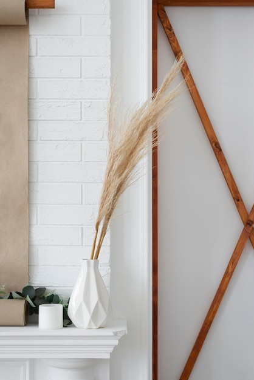

A contemporary home does not need to choose between clean, modern design and the character of an older English property. Period details can add depth and a sense of history, while thoughtful updates make rooms comfortable for everyday life. The key is to preserve what gives a space its identity and let new elements sit alongside it rather than compete.
Before choosing colours or furniture, look closely at the room’s existing features. These might include cornices, ceiling roses, picture rails, panelled doors, original floorboards, a fireplace or deep window reveals. Even small details can influence how the whole space feels.
Where possible, repair and retain sound original features. If something has been covered or altered, uncovering it may be worthwhile, but avoid assuming that every old detail can or should be restored. The condition of the property and the needs of the household matter. In a listed building, or where proposed work may affect a protected feature, check the relevant requirements before making changes.
Period mouldings and fireplaces often work best when they remain visible. Keep large pieces of furniture from blocking them, and avoid crowding mantelpieces or decorative walls with too many accessories. In a room with modest features, restrained furnishings can help those details stand out without making the interior feel like a museum.
You can also use contrast deliberately. A simple contemporary sofa against traditional panelling, for example, can make both elements feel more distinctive. The contrast should feel considered: repeat a shape, material or colour elsewhere in the room to create a visual link.
Colour can connect old and new. Soft, muted shades can complement traditional joinery and plasterwork, while deeper colours can bring definition to a fireplace or built-in cabinetry. Modern neutrals can also work well, especially when balanced with natural materials and the room’s existing character.
Consider how the light changes throughout the day before settling on a palette. Test paint on the wall, and view it beside floors, trim and larger furnishings. Painting every period feature the same colour as the wall can create a quiet, unified effect; using a contrasting shade can emphasise its shape. Neither approach is right for every room.
A room filled only with period-style furniture can feel overly formal. Contemporary pieces introduce a more relaxed note, while carefully chosen antiques or vintage finds bring texture and individuality to a modern scheme.
Aim for balance rather than a strict historical match. A traditional dining table can sit comfortably with simple chairs, and a modern bed can work in a room with original timber flooring. Pay attention to scale: furniture should suit the proportions of the room and leave architectural features visible.
Lighting is an opportunity to combine practical needs with character. A contemporary pendant or wall light can provide a clear contrast with older details, while a more traditional fitting may reinforce the room’s existing style. In either case, think about how the light will be used: general illumination, reading, cooking and highlighting artwork may call for different sources.
Where existing wiring or historic fittings are involved, seek appropriate professional advice before making changes. The aim is to improve comfort without damaging details worth keeping.
Natural materials can help bridge the gap between old and new. Timber, stone, linen, wool and metal each bring texture that can sit comfortably alongside traditional plasterwork or decorative woodwork. Repeating a small number of finishes across a room can make a varied mix of furniture and architectural details feel cohesive.
Avoid introducing too many competing patterns and textures at once. If the room already has ornate mouldings or a strong floor pattern, keep some larger surfaces comparatively simple. In a plainer room, textiles, artwork and carefully selected objects can add warmth.
A period interior should still support the way people live now. Plan storage, seating, lighting and circulation around daily routines, rather than treating modern needs as an afterthought. Built-in storage can be useful, but its placement and design should respect the room’s proportions and significant features.
The most successful results usually come from a clear decision about what to preserve, what to update and where contrast will add interest. With that balance in place, an English period home can feel both rooted in its history and distinctly contemporary.
This website may use information you choose to provide, such as details entered into a contact form, to respond to your enquiry. Please avoid sending sensitive personal information. The specific handling, storage and retention of data should be explained in the full privacy policy. Read the Privacy Policy